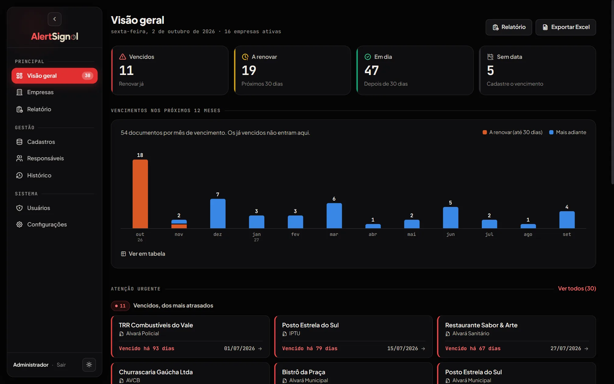
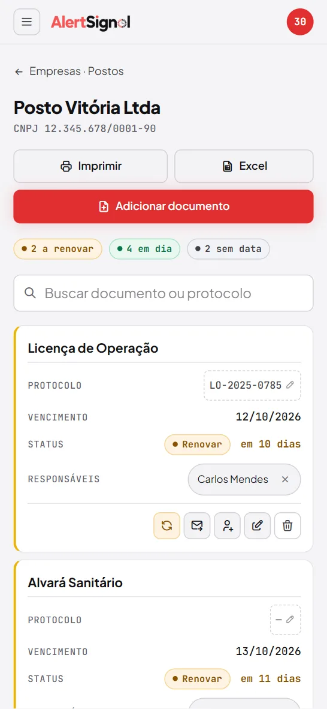

AlertSignal
Plazos de permisos y licencias con aviso automático.


En esta página: 01Por qué existe
Por qué existe
El control de vencimientos de permisos, AVCB (certificado de seguridad contra incendios) y otras licencias de las empresas del grupo se llevaba en hojas de cálculo, pero no siempre alguien las abría para verificar. Desarrollé la herramienta para avisar a los responsables de cada licencia cuando se acerca el vencimiento.
Problema, sistema y comprobación
Problema
Vencimientos que dependían de que alguien abriera la hoja de cálculo.
Sistema
Vencimientos de permisos y licencias de varias empresas, con avisos diarios por correo desde 90 días antes del vencimiento y mayor urgencia a los 30 y a los 7 días.
Comprobación
62 pruebas
unittest en GitHub Actions. Verificadas el 9/11/2026.
Sin demo alojada: la demostración se ejecuta en tu propio equipo, con datos ficticios, siguiendo el README.
Por dentro
-
Visión general
Vencidos, por renovar, al día y sin fecha, con el gráfico de los próximos 12 meses.
-
Avisos diarios por correo
Cada empresa muestra sus documentos por urgencia, con vencimiento y plazo. Los avisos empiezan 90 días antes, con mayor urgencia a los 30 y a los 7.
-
Informe de vencimientos
Filtra por situación y sale en PDF, Excel y CSV.
-
Una tarjeta por documento
En el móvil, cada documento muestra vencimiento, situación y responsables, con los botones de acción abajo.
Cómo se construyó
Arquitectura
Separé el sistema en módulos Python: app.py con las rutas Flask, los permisos y las exportaciones; database.py con el esquema SQLite y la conexión; notificacoes.py con las reglas de las alertas y el envío por Gmail; e importar_planilha.py, que lee la hoja de cálculo antigua con pandas una sola vez. El programador de tareas se ejecuta dentro del mismo proceso del servidor, y la interfaz usa Jinja2, CSS y JavaScript sin framework.
Ver en el código: README.pt-br.md L147–168 importar_planilha.py L95–174 app.py L1354–1402 notificacoes.py L383–413
- Hoja importada una vez
- Base de datos SQLite
- Verificación diaria programada
- Correo por responsable
- Registro del aviso
Decisiones técnicas
SQLite en un solo archivo
Elegí SQLite en lugar de PostgreSQL porque el sistema se ejecuta en una máquina local, con pocas escrituras: no requiere configuración, y la copia de seguridad consiste en copiar un archivo. La ruta de la base de datos está en una variable de
database.py, y el modo demostración cambia esa ruta por undemo.dbaparte, así que los datos ficticios nunca tocan la base real. Las consultas son SQL directo y parametrizado, sin ORM.Ver en el código: README.pt-br.md L133–137 database.py L4–19 app.py L1375–1380
Programador dentro del proceso de Flask
Usé APScheduler en lugar de cron porque se ejecuta dentro del proceso de Flask, funciona en Windows y permite cambiar la hora del envío desde la propia pantalla. La verificación diaria es un job con id fijo, creado a la hora guardada en la configuración. Cuando el administrador guarda una nueva hora, la ruta llama a
reschedule_job, y el envío cambia sin reiniciar el servidor.Ver en el código: README.pt-br.md L135 app.py L1354–1363 app.py L1054–1059
Seguridad sin paquetes adicionales
Hice la seguridad solo con Flask y la biblioteca estándar. Un token CSRF por sesión va en todo formulario y en todo
fetchque modifica datos, y el servidor lo compara conhmac.compare_digest. En cada solicitud, el usuario se vuelve a leer de la base de datos: quien fue eliminado o desactivado pierde la sesión, y quien cambió de contraseña también, porque la columnasessao_versaoaumenta. En las exportaciones, el texto que empieza por=sigue siendo texto, sin convertirse en fórmula.Ver en el código: README.pt-br.md L141–143 app.py L69–91 app.py L163–205 app.py L1316–1319
Desafío
Avisar una vez, sin perder ninguno
Tenía que garantizar que cada hito de aviso saliera una sola vez para cada responsable; después del vencimiento, el recordatorio pasa a ser diario. Creé la tabla alerta_enviado, cuya clave única incluye el hito y el vencimiento: ejecutar dos veces el mismo día no repite nada, y un documento renovado empieza de nuevo con la nueva fecha. Si la verificación no se ejecutó algún día, sale solo el hito más reciente. El aviso solo se registra después de enviar el correo; si el envío falla, vuelve al día siguiente.
Ver en el código: database.py L80–92 notificacoes.py L89–191 notificacoes.py L383–413
Pruebas
La app tiene 62 pruebas en unittest: 42 de rutas, permisos y seguridad, y 20 de las reglas de las alertas, de la situación y del programador. Se ejecutan en el modo demostración, en una base de datos temporal, y el envío de correo se sustituye por uno falso que solo cuenta las llamadas. Las reglas de las alertas usan una fecha fija, para comprobar cada hito sin depender del día. GitHub Actions lo ejecuta todo en cada push, en Python 3.11 y 3.13.
Ver en el código: test_rotas.py L1–40 test_alertas.py L1–60 testes.yml L1–24
Stack y enlaces
Stack
Python, Flask, SQLite, APScheduler, pandas, openpyxl, Jinja2, JavaScript, unittest, GitHub Actions